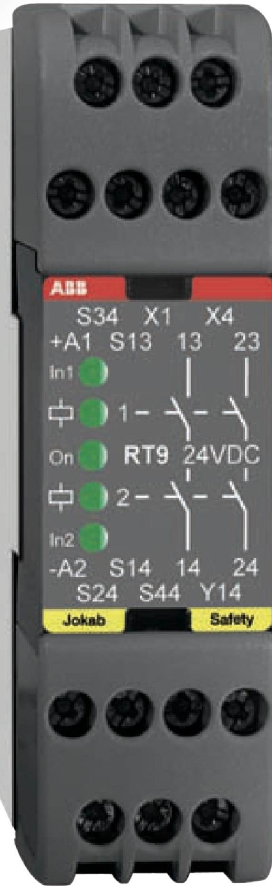

السيفتي PLC · الدرس 3 من 9
الـ RT9 ريلاي أمان عرضه 22.5 مللي، بيراقب وظيفة أمان واحدة (طوارئ أو بوابة أو ستارة) ويقفل خرجين NO بيشغّلوا الكونتاكتورات. متصنّف لحد Cat. 4 / PL e / SIL 3.

في القناتين: الاتنين يتفتحوا ويتقفلوا تاني قبل أي ريست جديد.
NC من K1 و K2 توالي مع الريست: كونتاكتور ملحوم ← الريست مايوصلش.
الرقم ده بيدخل في حساب مسافة أمان الستارة.
جاوب على 5 من 6 صح على الأقل عشان الدرس يتعلّم عليه.
الأرقام والأطراف هنا من كتالوجات ABB (Pluto Hardware Manual و Programming Manual و RT9). قبل ما تطبّق على ماكينة حقيقية ارجع للكتالوج وتقييم المخاطر بتاع الماكينة. تقدّمك بيتسجّل على الجهاز ده.
© LearnElectricals